модуль 2. основы css
Погрузитесь в мир стилизации, где ваш сайт приобретет индивидуальность! Откройте секреты цветовых схем и шрифтов, и дайте своему проекту «вау»-эффект!
Погрузитесь в мир стилизации, где ваш сайт приобретет индивидуальность! Откройте секреты цветовых схем и шрифтов, и дайте своему проекту «вау»-эффект!
И первый же вопрос — что это за таинственные буквы "CSS"?
CSS (Cascading Style Sheets) — это язык стилей, используемый для оформления веб-страниц. Если HTML позволяет создавать структуру сайта, то CSS помогает сделать его красивым! С помощью CSS ты можешь менять цвета, шрифты, размеры, отступы и многие другие параметры.
Представь, что HTML — это каркас твоего сайта, а CSS — это краска и декор, которые делают его уникальным и стильным!
Чтобы добавить CSS в свой проект, ты можешь использовать внутренние стили или создать отдельный файл стилей. Я рекомендую использовать второй вариант. Просто создай новый файл, щелкнув правой кнопкой мыши, и назови его styles.css. Не забудь подключить этот файл к твоему HTML, добавив строку в <head>:
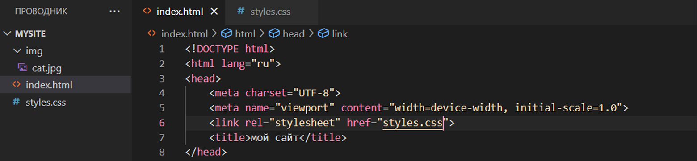Давай разберемся, как это работает
Селектор - это то, что мы используем, чтобы выбрать элементы на странице. Например, если ты хочешь изменить стиль заголовка <h1>, просто используй его имя как селектор.
Свойство - это стиль, который ты применяешь. Например, color — это свойство, которое изменяет цвет текста.
Чтобы было понятнее давай для примера в файле style.css покрасим наш заголовок в синий и изменим размер шрифта.
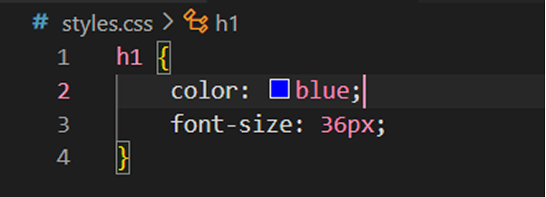Вот результат:
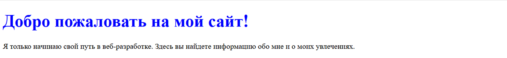Теперь ты можешь поэкспериментировать с разными стилями! Попробуй изменить цвет фона и задать отступы:
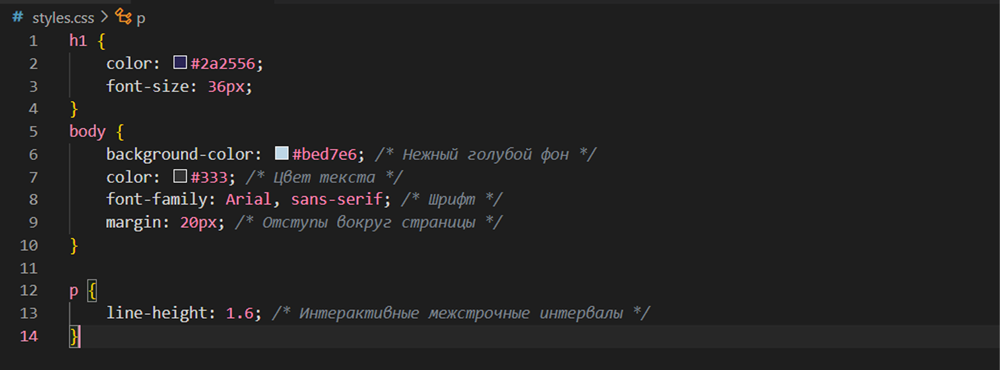У тебя получилось?
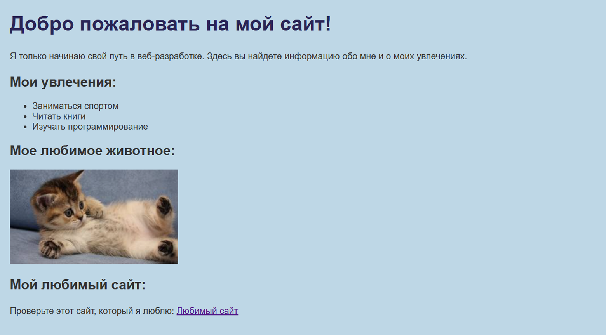Выглядит неплохо, но ты можешь разнообразить стили используя множество других тегов.
Эти теги 100% пригодятся тебе в работе!
Это пространство вокруг элемента. Оно определяет расстояние между элементами на странице. Используя margin, ты можешь сделать так, чтобы элементы не соприкасались друг с другом. Отступ можно делать как сразу со всех сторон, так и выборочно, используя margin top/bottom/left/right.
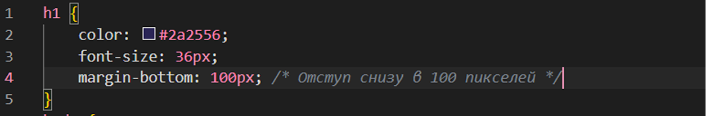Проверим что получилось:
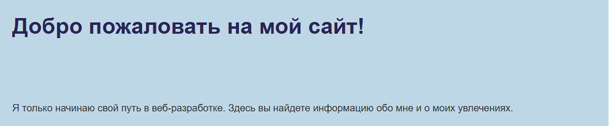Это пространство между содержимым элемента и его границей. Используя padding, ты можешь добавить отступы внутрь элементов, чтобы текст или другие содержимые не прилипали к краям.
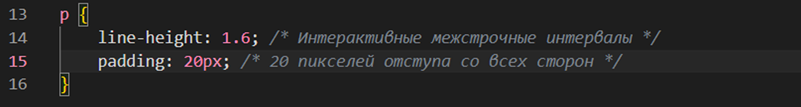Проверим что получилось:
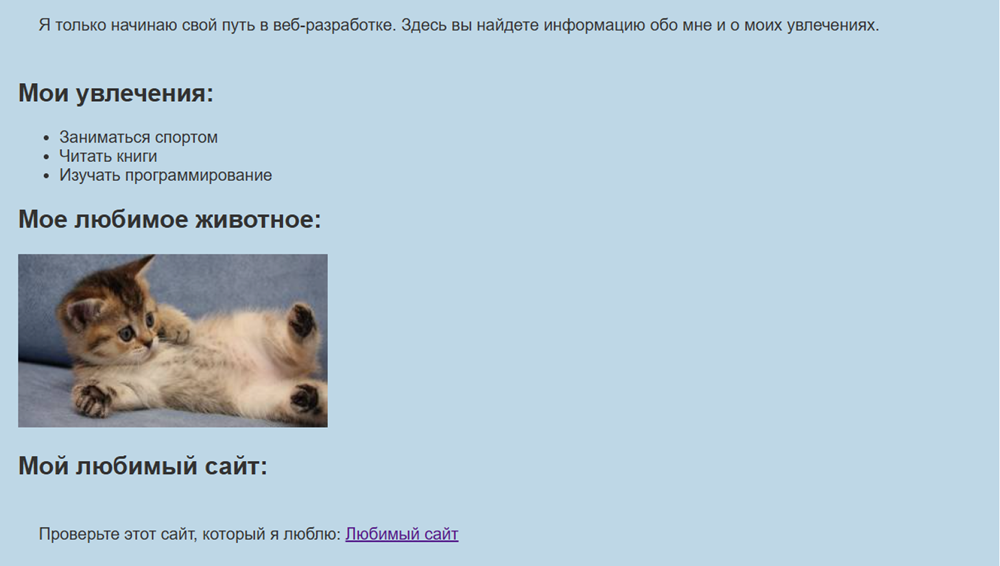border — это рамка вокруг элемента. Ты можешь настроить стиль, ширину и цвет границы.
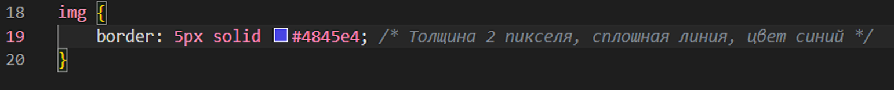Проверим что получилось:
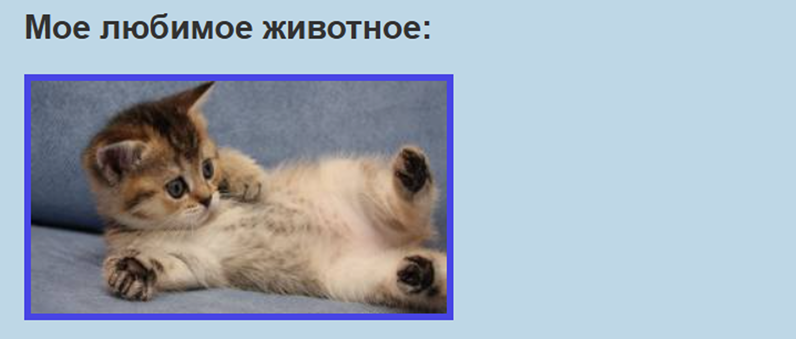color — это цвет текста, который отображается на странице.
background-color — это цвет фона элемента.
Проверим что получилось:
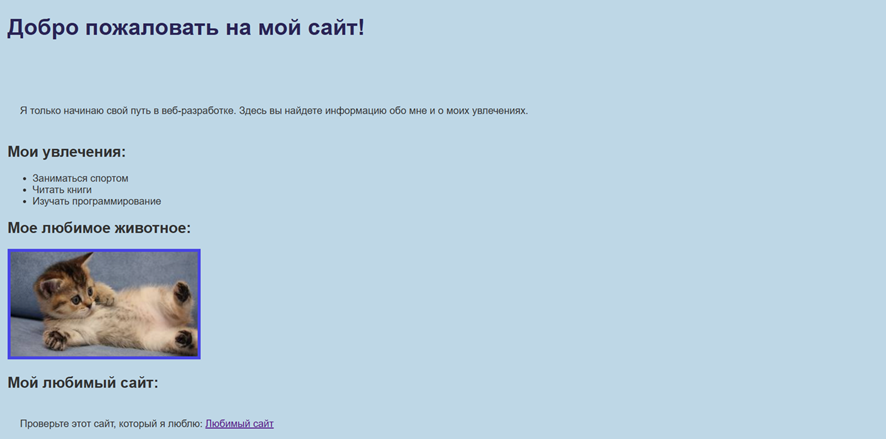Теперь давай потренируемся и улучшим наш сайт. Сделаем такой дизайн:
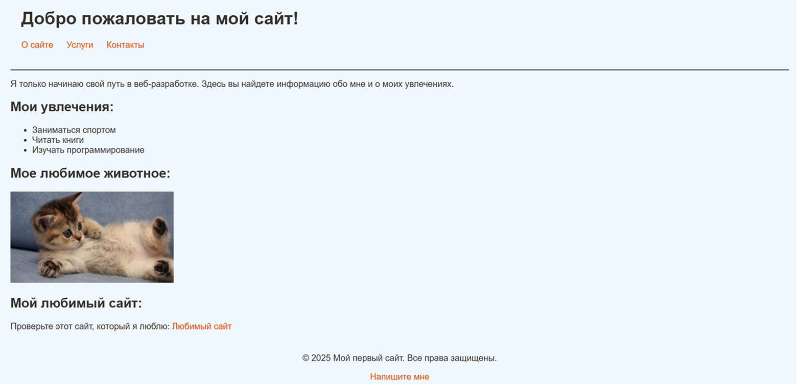Не знаешь как? Держи подсказку!
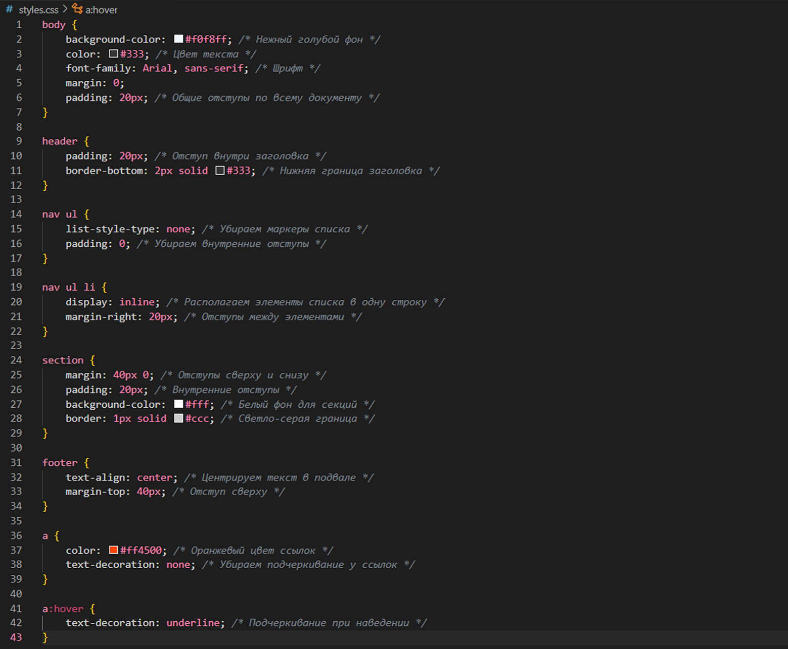Теперь попробуй поэксперементировать: замени цвет текста или фона и настрой отступы по своему усмотрению. После этого можешь открыть сайт в интернете, используя Live Server и проверить, получилось ли у тебя реализовать все свои желания.
Отлично! теперь ты можешь стилизовать свой сайт, используя CSS. Больше возможностей ты сможешь открыть для себя в учебнике, перейдя по этой ссылке.
Теперь, когда ты уже знаешь основы CSS, давай разберёмся с кое-какой возможностью, которая поможет сделать твой сайт адаптивным — то есть таким, который будет классно выглядеть на любых устройствах, будь то смартфон, планшет или компьютер.
Медиазапросы (или media queries) — это специальные команды в CSS, которые позволяют применять разные стили в зависимости от условий, например, ширины экрана. С помощью медиазапросов ты можешь сделать так, чтобы твой сайт выглядел по-разному на устройствах с различными размерами экрана.
Как это работает? Давай посмотрим, как добавить медиазапросы в твой CSS.
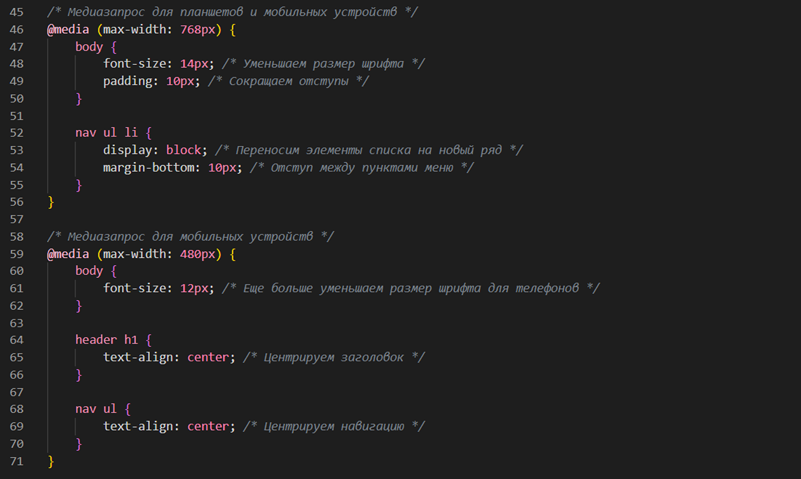Проверь, получилось ли у тебя. Для этого можешь нажать F12.
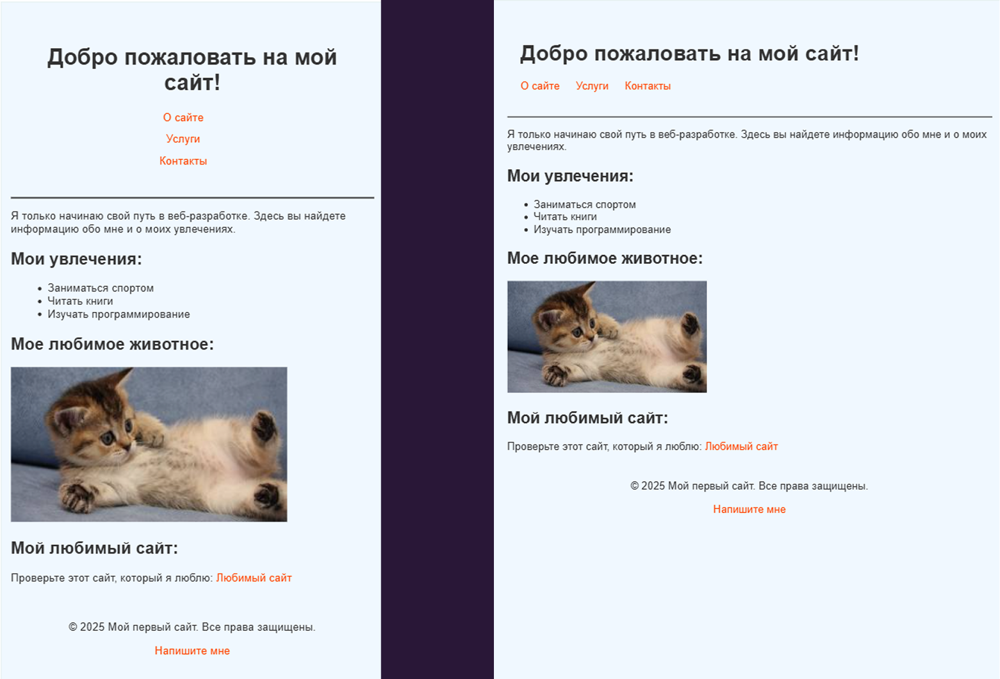Отлично! вот тебе краткая памятка по адаптиву твоих сайтов:
Пропиши стандартные стили, как мы делали ранее. Это будет то, что увидят пользователи на больших экранах.
Используй медиазапросы, чтобы изменить стили для планшетов и мобильных устройств. Не забудь указать максимальную ширину устройства, для которого ты создаешь адаптив.
Изменяй свойства элементов — например их выравнивание. Для мобильных устройств часто стоит располагать элементы в один столбец, а не в ряд. А также уменьшай размер шрифта и увеличивай отступы, чтобы текст не прижимался к краям экрана.
Открывай свой сайт на разных устройствах или в инструментах разработчика браузера (например, Google Chrome) с помощью функции «Responsive Design Mode». Это поможет тебе увидеть, как твой сайт будет выглядеть в разных масштабах.
Если ты хочешь узнать еще больше о возможностях CSS и создании адаптивных сайтов, можешь ознакомиться с более подробным учебником, просто перейдя по этой ссылке. Уверена, ты найдёшь там много полезной информации!